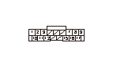

車いす固定装置DTC 13
DTC 13:
L.クラッチ回路異常
•
故障診断を始める前に、必ずイグニッション スイッチをOFFにし、SCSカプラの接続を外すこと
•
DTC 14、21、22を同時に検知した場合は、それぞれのDTC別故障診断の点検も同時に行うこと
-
DTC 14
-
DTC 21
-
DTC 22
再現テスト1
1-1
テールゲートを開け、主電源スイッチをONにし、トランスミッタ スイッチをONにする
1-2
トランスミッタ スイッチを操作して、ホイール チェア ドライブ モータの動作確認を行う
◆ 動作は正常か
YES
-
一過性故障、現在システムは正常
NO
-
ステップ
2
へ進む
電源回路（+B EWS CLUTCHライン）の点検
2-1
主電源スイッチをOFFにする
2-2
ホイール チェア ドライブ コントロール ユニット カプラA（17P）の接続を外す
2-3
ホイール チェア ドライブ コントロール ユニット カプラA（17P）のNo.7端子とボディ アース間の電圧を測定する
◆ バッテリ電圧か
YES
-
ステップ
3
へ進む
NO
-
ヒューズ ボックス内のNo.53（10A）ヒューズの溶断、またはコードの断線
ホイール チェア ドライブ コントロール ユニットのGND回路（PG3ライン）の断線点検
3-1
ホイール チェア ドライブ コントロール ユニット カプラA（17P）のNo.15端子とボディ アース間の導通を点検する
◆ 導通があるか
YES
-
ステップ
4
へ進む
NO
-
アース不良（G602）、またはコードの断線
ホイール チェア ドライブ コントロール ユニットとクラッチ間（LECライン）の断線点検
4-1
ホイール チェア ドライブ コントロール ユニット カプラB（36P）およびL.ホイール チェア ドライブAssy.カプラA（5P）の接続を外す
4-2
ホイール チェア ドライブ コントロール ユニット カプラB（36P）のNo.2、No.20端子とL.ホイール チェア ドライブAssy.カプラA（5P）のNo.1、No.3端子間の導通を点検する
◆ 導通があるか
YES
-
ステップ
5
へ進む
NO
-
コードの断線
ホイール チェア ドライブ コントロール ユニットとクラッチ間（LECライン）の短絡点検
5-1
ホイール チェア ドライブ コントロール ユニット カプラB（36P）のNo.2、No.20端子とボディ アース間の導通を点検する
◆ 導通があるか
YES
-
コードの短絡
NO
-
ステップ
6
へ進む
ホイール チェア ドライブ コントロール ユニットとラチェット解除ソレノイド間（LBLライン）の短絡点検
6-1
L.ホイール チェア ドライブAssy.カプラC（2P）の接続を外す
6-2
ホイール チェア ドライブ コントロール ユニット カプラB（36P）のNo.1、No.19端子とボディ アース間の導通を点検する
◆ 導通があるか
YES
-
コードの短絡
NO
-
ステップ
7
へ進む
再現テスト2
7-1
ホイール チェア ドライブ コントロール ユニット カプラA（17P）のNo.3端子、ホイール チェア ドライブ コントロール ユニット カプラB（36P）のNo.1端子とバッテリ＋端子を接続する
7-2
ホイール チェア ドライブ コントロール ユニット カプラA（17P）のNo.12端子、ホイール チェア ドライブ コントロール ユニット カプラB（36P）のNo.19端子とバッテリ－端子を接続し、L.ラチェット解除ソレノイドおよびL.ホイール チェア テンション モータをONにする
7-3
L.ウインチベルトを手動で引出せるか確認する
バッテリ
ホイール チェア ドライブ コントロール ユニット カプラ（配線色）
＋
A3（空）、B1（紫）
－
A12（灰）、B19（紫）
◆ 手動でベルトを引出せるか
YES
-
ステップ
8
へ進む
NO
-
L.ホイール チェア ドライブAssy.を交換する

再現テスト3
8-1
ホイール チェア ドライブ コントロール ユニット カプラB（36P）のNo.2端子とバッテリ＋端子を接続する
8-2
ホイール チェア ドライブ コントロール ユニット カプラB（36P）のNo.20端子とバッテリ－端子を接続し、L.クラッチをONにする
8-3
L.ウインチベルトを手動で引出せるか確認する
バッテリ
ホイール チェア ドライブ コントロール ユニット カプラ（配線色）
＋
B2（赤）
－
B20（緑）
◆ 手動でベルトを引出せるか
YES
-
L.ホイール チェア ドライブ モータを交換する
NO
-
ホイール チェア ドライブ コントロール ユニットを交換する